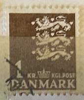
| SOURCE | TITLE| IMAGE MATCH | click to source page |
| eBay | Denmark 652 mint/MNH 1977 Small Imperial Crest | eBay | 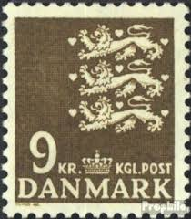 |
| eBay | Dänemark 1977 ** Mi.652 Freimarke Reichswappen Imperial Coat of Arms [sv2882] | eBay | 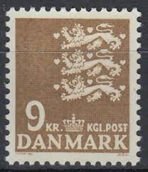 |
| HipStamp | Denmark 297 - Used - 1k Small State Seal / Lions (1946) (1) | Europe - Denmark, General Issue Stamp / HipStamp | 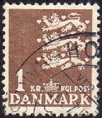 |
| HipStamp | Denmark 1967-68 Early Issue Fine Mint Hinged 1Kr. NW-224459 | Europe - Denmark, Stamp / HipStamp | 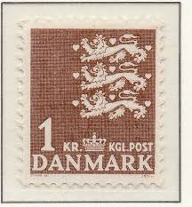 |
| ebid.net | GUERNSEY, Flag of Guernsey, The Royal Court, Flag of Guernsey, The Royal Court 1 on eBid Malaysia | 221103789 | 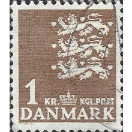 |
| HipStamp | Denmark #297 1k Small State Seal | Europe - Denmark, General Issue Stamp / HipStamp | 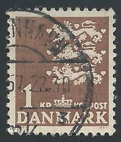 |
| ebid.net | DENMARK, Triple lion passant, brown 1946, 1Kr on eBid United States | 214792517 | 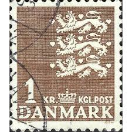 |
| Shutterstock | St Petersburg Russia June 1 2016 Stock Photo 430615123 | Shutterstock | 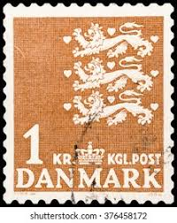 |
| iStock | Postage Stamp France Coat Of Arms Stock Photo - Download Image Now - Coat Of Arms, France, Hobbies - iStock | 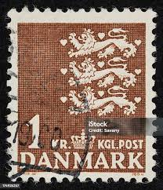 |
| Alamy | 1 dkr danish krone hi-res stock photography and images - Alamy | 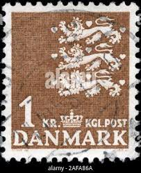 |
| Stampedia | stampedia DENMARK STAMP catalog |  |
| Alamy | Royal banner of denmark hi-res stock photography and images - Page 2 - Alamy | 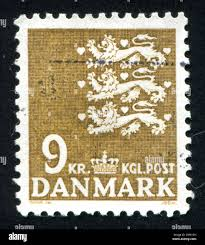 |
| lastdodo.com | State coat of arms 2.80 (1975) - Denmark - LastDodo |  |
| Alamy | Denmark stamp hi-res stock photography and images - Alamy | 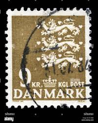 |
| allnumis.com | 1 Krone 1968 - Coat of Arms (Three Lions), Coat of Arms - Lion - Denmark - Stamp - 7684 | 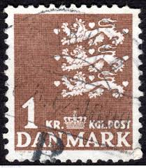 |
| Shutterstock | Denmark Circa 1946 Stamp Printed Denmark Stock Photo 126754817 | Shutterstock | 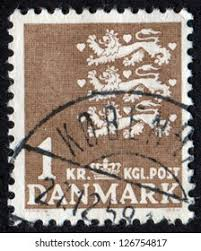 |
| Dreamstime.com | DENMARK - CIRCA 1985: a Stamp Printed in Denmark Shows Queen Margrethe II, Circa 1985. Editorial Photography - Image of europe, danish: 237548422 | 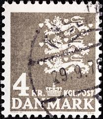 |
| Alamy | Danish postage stamp hi-res stock photography and images - Alamy | 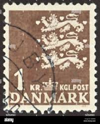 |
| DBA.dk | Danmark, stemplet, Dagligserie | DBA | 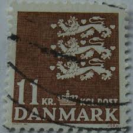 |
| HipStamp | Denmark #813 Single | Europe - Denmark, General Issue Stamp / HipStamp | 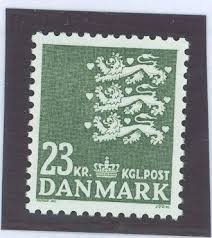 |
| eworldstamps.com | Denmark Definitives Part 5 - Small National Coat of Arms - Varieties and Types - EWorldStamps | 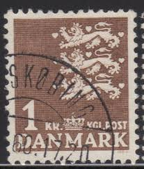 |
| Mercari | Denmark - Caravel - Used | Mercari | 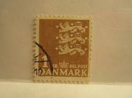 |
| Stampedia | DENMARK 1970 Commemorative Stamps 3.1 krone, | Small State Seal | 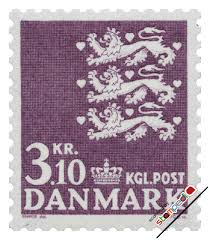 |
| Amazon.de | Prophila Collection Denmark 399 x (complete edition) normal paper 1962 small imperial coat of arms (stamps for collectors) flags/crests/maps: Amazon.de: Toys | 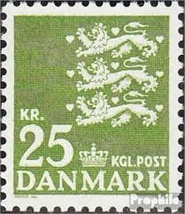 |
| Todocolección | danemark denmark 2013 - h.c. andersen set mnh** - Buy Antique stamps of Denmark on todocoleccion | 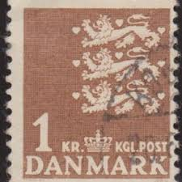 |
| femmes-et-maths.fr | Denmark Postal Stamps Denmark Greenland 2010 S - Complete Issue MNH Collection International Women Stamp | 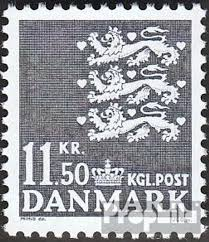 |
| PicClick | DENMARK POSTAGE STAMP Cat. No C1-5 Mint LH $136.00 - PicClick | 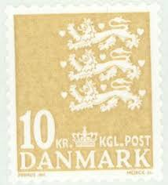 |
| Stampedia | stampedia DENMARK STAMP catalog | 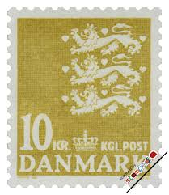 |
| Alamy | 2 80 dkr hi-res stock photography and images - Alamy | 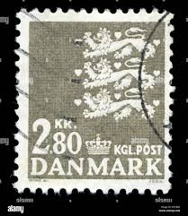 |
| Alamy | Postage stamp printed in denmark hi-res stock photography and images - Page 7 - Alamy | 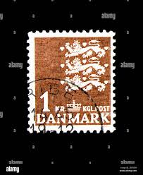 |
| Alamy | Danish krone hi-res stock photography and images - Alamy | 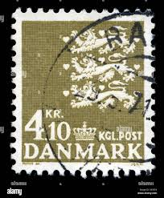 |
| Shutterstock | Denmark-circa 1962a Stamp Printed Denmark Shows Stock Photo 82277884 | Shutterstock | 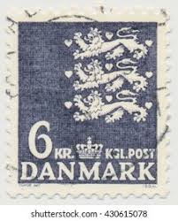 |
| allnumis.com | 10 Kroner 2010 - Coat of Arms (Three Lions), Coat of Arms - Lion - Denmark - Stamp - 6256 | 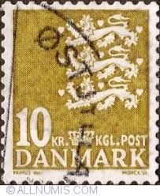 |
| Shutterstock | Lion Stamps: Over 3,703 Royalty-Free Licensable Stock Photos | Shutterstock | 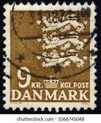 |
| Alamy | Royal coat of arms of denmark hi-res stock photography and images - Alamy | 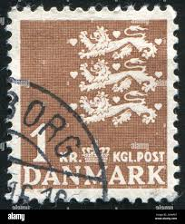 |
| Stampedia | stampedia DENMARK STAMP catalog | 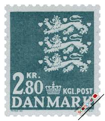 |
| Shutterstock | Greece Circa 1954 Cancelled Postage Stamp Stock Photo 2638952809 | Shutterstock | 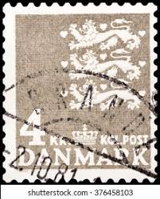 |
| Webstore.com | USED DENMARK #299 (1946) | Stamps (Postage Stamps) | Buy & Sell at Webstore | 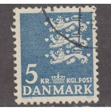 |
| Shutterstock | Karnal Haryana India -july 22nd 2025-closeup Stock Photo 2705086505 | Shutterstock | 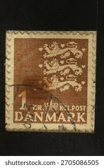 |
| zayixstamps.com | Denmark 805 MNH 6.50k dp grn Lion National Emblem 083022S44 – Zayix Stamps & Collectibles | 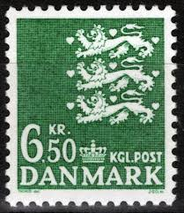 |
| Alamy | Danish coat of arms hi-res stock photography and images - Page 2 - Alamy | 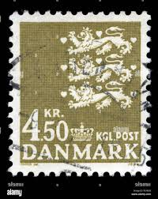 |
| csdastampauctions.com | Search Listings - Category: Stamps / Europe / Denmark/Faroe Islands - Page 11 of 22 | CSDA Stamp Auctions | 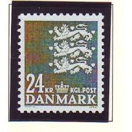 |
| Amazon UK | Prophila Collection Denmark 939-942 (complete.issue.) unmounted mint/never hinged ** MNH 1989 Small Imperial Crest (Stamps for collectors) Flags/Coats of Arms/Maps : Amazon.co.uk: Toys & Games | 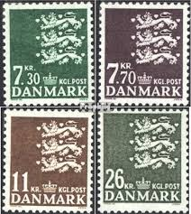 |
| eBay | DENMARK # 396 MNH Dancer State Seal | eBay | 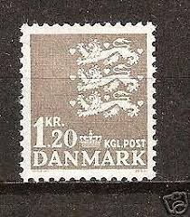 |
| Amazon.com | Amazon.com: Denmark 289y-291y (Complete.Issue.) floureszierendes Paper unmounted Mint/Never hinged ** MNH 1968 Imperial Crest (Stamps for Collectors) Flags/Coats of Arms/Maps : Toys & Games | 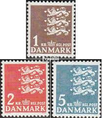 |
| Alamy | DENMARK - CIRCA 1969: a stamp printed in the Denmark shows Kronborg Castle, UNESCO World Heritage Site, circa 1969 Stock Photo - Alamy | 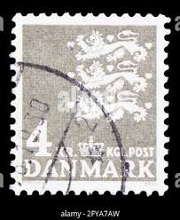 |
| csdastampauctions.com | Search Listings - Category: Stamps / Europe / Denmark/Faroe Islands - Page 17 of 22 | CSDA Stamp Auctions | 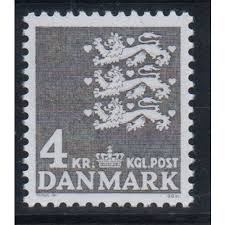 |
| eBay | Denmark #Mi0586 MNH 1975 Heraldic Lion Small Arms Definitives [500] | eBay |  |
| eBay | DENMARK SCOTT 810 MNH VF - 1986 11kr BROWN ISSUE - TYPES OF 1933 - 85 | eBay | 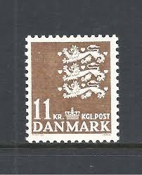 |
| Stampedia | stampedia DENMARK STAMP catalog | 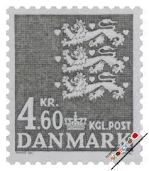 |
| Dreamstime.com | Cancelled Postage Stamp Printed by Denmark, that Shows Coat of Arms - Three Lions Editorial Stock Photo - Image of circa, pattern: 339832373 | 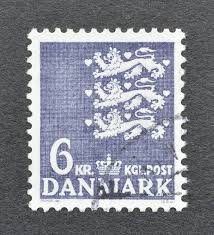 |
| eBay | Denmark 711 mint/MNH 1980 Small Imperial C | eBay | 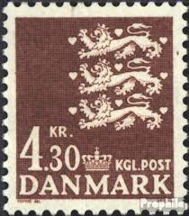 |
| Shutterstock | Singapore April 12 2018 Stamp Printed Stock Photo 1066745051 | Shutterstock | |
| Shutterstock | St Petersburg Russia June 1 2016 Stock Photo 430615132 | Shutterstock | |
| eBay | VF (Very Fine) Used Danish & Faroese Stamps for sale | eBay | |
| Alamy | Danish coat of arms hi-res stock photography and images - Page 4 - Alamy | |
| Alamy | Red black coat hi-res stock photography and images - Alamy | |
| Alamy | Denmark postage stamp hi-res stock photography and images - Alamy | |
| eBay | Denmark #Mi0434 MH 1965 Heraldic Lion Small Arms Definitives [398] | eBay | |
| eBay | DENMARK 444C - Danish State Seal "1969 Grey" (pf68162) | eBay |